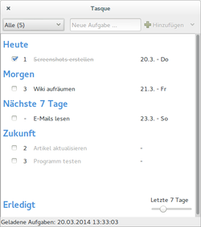
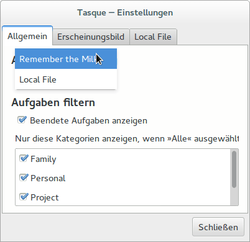
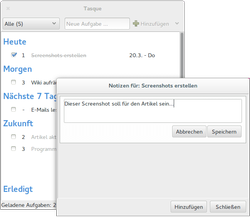
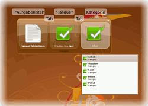
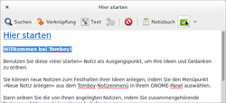

Tasque
Dieser Artikel wurde für die folgenden Ubuntu-Versionen getestet:
Ubuntu 16.04 Xenial Xerus
Ubuntu 14.04 Trusty Tahr
Zum Verständnis dieses Artikels sind folgende Seiten hilfreich:
Tasque  ist ein einfaches Aufgabenverwaltungsprogramm im Stil einer To-do-Liste. Das Projekt entstand 2008 im Rahmen der Novell Hackweekv2. Tasque setzt sich zum Ziel, mit einer einfachen Oberfläche die erzeugten Daten möglichst zentral zu verwalten und den Austausch mit anderen Anwendungen und Diensten zu erleichtern. Entwickelt wurde die Anwendung mit Mono.
ist ein einfaches Aufgabenverwaltungsprogramm im Stil einer To-do-Liste. Das Projekt entstand 2008 im Rahmen der Novell Hackweekv2. Tasque setzt sich zum Ziel, mit einer einfachen Oberfläche die erzeugten Daten möglichst zentral zu verwalten und den Austausch mit anderen Anwendungen und Diensten zu erleichtern. Entwickelt wurde die Anwendung mit Mono.

Hierzu ist schon eine Schnittstelle für den beliebten Weborganizer Remember The Milk  vorhanden. Verwendet man den genannten Dienst zum Verwalten seiner Aufgaben nicht, so lässt Tasque den Benutzer die Daten selbstverständlich auch lokal ablegen. Des Weiteren existierten Plugins für GNOME Do und Tomboy.
vorhanden. Verwendet man den genannten Dienst zum Verwalten seiner Aufgaben nicht, so lässt Tasque den Benutzer die Daten selbstverständlich auch lokal ablegen. Des Weiteren existierten Plugins für GNOME Do und Tomboy.
Installation¶
Tasque kann aus den offiziellen Paketquellen installiert [1] werden:
tasque (universe)
 mit apturl
mit apturl
Paketliste zum Kopieren:
sudo apt-get install tasque
sudo aptitude install tasque
Benutzung/Konfiguration¶
 Bei Ubuntu-Varianten mit einem Anwendungsmenü findet man einen Programmstarter [2] unter "Büro -> Tasque". Startet man das Programm zum ersten Mal, findet man sich zunächst im Einstellungsdialog wieder. Hier kann man eine der derzeit drei Möglichkeiten wählen, eigene Daten abzulegen bzw. abzurufen:
Remember the Milk
Local (auf der eigenen Festplatte)
Remember the Milk¶
Die Benutzung von Tasque sei beispielhaft am Zusammenspiel mit dem Weborganizer Remember The Milk gezeigt. Wählt man also RTM aus, kommt man auf dem folgendem Dialog zu einem Link ("Click here to connect"), der im Browser geöffnet wird.
Man meldet sich auf der Portalseite an und bestätigt Tasque als vertrauenswürdige Programmschnittstelle. Nun geht es in Tasque selbst weiter. Nach einem letzen Klick auf einen internen Link kommt man zur eigentlichen Programmoberfläche, die sich in etwa wie auf dem einleitenden Screenshot präsentiert.

Geordnet nach dem Fälligkeitsdatum und Prioritäten werden die Notizen von RTM in Tasque eingebunden und können "live" verwaltet werden. Die Änderungen, die in Tasque vorgenommen werden, tauchen nach kurzer Zeitverzögerung auch im Webinterface auf und umgekehrt.
Mit der Tastenkombination Strg + N lässt sich eine neue Aufgabe hinzufügen. Priorität (1-2-3) und Fälligkeit (Datum) lassen sich in Auswahlfeldern über den entsprechenden Bereichen festlegen. Die Aufgabenbezeichnung kann durch einfaches Klicken zum Bearbeiten freigeben werden.
Des Weiteren ist es möglich, zu jeder Aufgabe mehrere Notizen anzulegen (siehe Abbildung). Hierzu reicht ein Doppelklick auf das freigestellte Symbol (erscheint erst, wenn eine Notiz angelegt wurde). Für den schnellen Programmzugriff ist Tasque nach dem Programmstart als Symbol im Benachrichtigungsfeld vorhanden. Über einen Rechtsklick  auf das Symbol sind die Einstellungen zu erreichen oder kann die Anwendung beendet werden.
auf das Symbol sind die Einstellungen zu erreichen oder kann die Anwendung beendet werden.
Tasque Gnome-Do Plugin¶

Um Tasque möglichst gut in den GNOME-Desktop zu integrieren und damit die Handhabung zu verbessern, existiert ein Plugin für GNOME Do. Für die Installation von Programm und Plugins siehe GNOME Do.
Die Benutzung des Plugins sieht vor, dass zuerst der Aufgabentitel eingegeben wird. Man drückt die Taste Tab ⇆ , tippt den Programmnamen "Tasque" (die ersten drei Buchstaben sollten ausreichen), bestätigt mit Tab ⇆ und kann nun mit den Tasten ↓ ↑ die gewünschte Kategorie wählen. Mit einem abschließenden ⏎ trägt man die Aufgabe in die Liste ein.
Tasque Tomboy Plugin¶

Nach der Installation von Tasque findet sich ein neues Plugin im Tomboy, das über "Bearbeiten -> Einstellungen -> Add-Ins -> Desktop-Integration" aktiviert werden kann.
Markiert man einen Text in einer Tomboy-Notiz und klickt anschließend auf den Knopf "Tasque" in der Toolbar, dann wird automatisch eine neue Aufgabe in Tasque erstellt. Der Text der Aufgabe entspricht der ausgewählten Textstelle.
Problembehebung¶
Unity¶
Tasque verwendet ein Panel-Applet Im Benachrichtigungsfeld (Systray), was bei der Verwendung unter der Desktop-Oberfläche Unity zu Problemen führt. Hier muss man die Anzeige des Symbols erst freischalten.
Links¶
Tasque
- ProjektseiteGTD unter Linux
- Vergleich von Osmo, Tasque und Getting Things GNOME, 04/2010Andere Taskmanager für GNOME
- Vergleich von Getting Things Gnome! mit Evolution, Tasks, Tasque, Tomboy, Taskcoach, Gtodo 03/2009Notizen
 Übersichtsartikel
Übersichtsartikel
- Erstellt mit Inyoka
-
 2004 – 2017 ubuntuusers.de • Einige Rechte vorbehalten
2004 – 2017 ubuntuusers.de • Einige Rechte vorbehalten
Lizenz • Kontakt • Datenschutz • Impressum • Serverstatus -
Serverhousing gespendet von